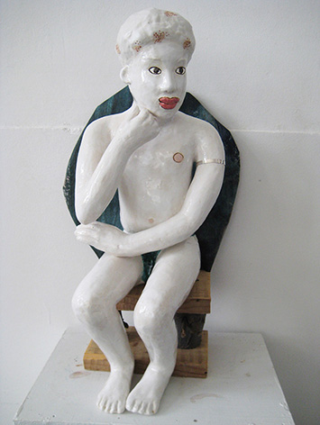
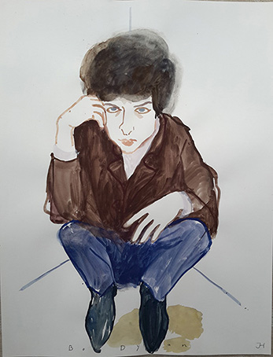

Jaarlijks, het eerste weekend van november
Open atelier Linschotenstraat 23
2023 Open atelier Linschotenstraat 23 Joke Hak en Kuno Grommers
2022 De Vishal/Haarlem Collage Peepshow
2021 Atelier Linschotenstraat Kunstlijn
2018 De Kreek/ Oosterbeek
2017 Keramikos
2017 Noord Hollands Archief
2017 Castellum Aquae/ ArtVark
2017 Kunsthandel Kruis-Weg 68/ArtVark
STRIPPED
2016 De Vishal
De Huiskamer van Haarlem
2016 Keramikos
2016 Ateliers Linschotenstraat
Kunstlijn
2016 Provinciehuis Haarlem
I walk the line
2016 De Vishal Kleine Zaal
2015 De Wethouderskamer Stadhuis Haarlem
2015 Ateliers Linschotenstraat Kunstlijn
2015 Keramikos Kunstlijn
2013 Kennemer Theater Beverwijk
2012 Kunstcentrum Haarlem
De keuze van Joke Breemouer
2012 Noord-Hollands Archief
Dansen op de vulkaan
2012 De Vishal Haarlem
Het oog van de storm
2009 Ateliers 195-197
De Liefde
2008 Kunstpunt
2003-2008 Phoenix 13
Pa�s Meubelshow
2007 Mondiaal centrum Haarlem
2003-2007 Jan en Piet Museum
2002 De Vishal
Bollywood
2001 Sidac Studio Leiden